Evidencia de Desarrollo (capturas)¶
Esta página reúne las capturas reales recopiladas por el propio equipo de desarrollo de Techmovil durante la construcción del sistema (repositorio Backend-AstramacoIII / frontend-astramaco-iii). No son capturas generadas por el equipo auditor: son la evidencia técnica que el equipo auditor revisó para sustentar los Papeles de Trabajo y el Registro de Evidencias de esta fase.
Todas las imágenes fuente completas (incluyendo las que no se muestran en línea aquí) quedan disponibles en docs/assets/img/ dentro de este repositorio, organizadas por carpeta:
config-herramientas/ (CI/CD backend, 35 capturas) · config-herramientas-front/ (CI/CD frontend, 8) · sonarqube-cobertura/ (3) · sonar-analysis/ (2) · pruebas-seguridad/ (21) · manual-usuario/ (11) · e2e-manual/ (11).
Estructura del desarrollo¶
Árbol de directorios del backend, tal como lo documentó el propio equipo en "Pruebas Unitarias" (arquitectura en capas: Controller, Service, Repository, DTO, Model — código de producción separado de las pruebas siguiendo la estructura estándar de Maven):
src
├── main/java/com/example/backendastramaco/
│ ├── BackendAstramacoApplication.java
│ ├── config/DataInitializer.java
│ ├── controller/ (Auth, Carga, DocumentoPersonal, Pedido, Transportista, Usuario)
│ ├── dto/ (Request/Response DTOs por entidad)
│ ├── exception/GlobalExceptionHandler.java
│ ├── model/ (Carga, DocumentoPersonal, Pedido, Transportista, Usuario)
│ │ ├── audit/ (Auditoria* por entidad + BaseEntity)
│ │ └── enums/ (EstadoPedido, EstadoTransportista, Rol, TipoDocumento, TipoMaterial, TipoTransporte)
│ ├── repository/ (repos JPA + repos audit/)
│ ├── security/
│ │ ├── config/ (CorsConfig, SecurityConfig)
│ │ ├── dto/ (AuthRequest, AuthResponse)
│ │ ├── jwt/ (JwtFilter, JwtUtil)
│ │ ├── service/CustomUserDetailsService.java
│ │ └── swagger/OpenApiConfig.java
│ └── service/ (Carga, DocumentoPersonal, Pedido, Transportista, Usuario, audit/)
├── main/resources/ (application.yml, static/, templates/)
└── test/java/.../backendastramaco/ (*UnitTest.java por servicio + controlador + seguridad)
Captura real del árbol de directorios del frontend (Angular, VS Code):
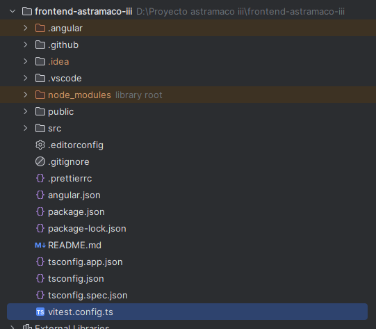
Diagrama general de arquitectura, flujo de autenticación y flujo de inventario
Ver Diagramas de Arquitectura (sección Documentación Técnica): diagrama de contenedores C4, secuencia de autenticación JWT y flujo de venta/control de stock, generados a partir del código fuente real del backend.
CI/CD — Backend (GitHub Actions)¶
El equipo backend documentó paso a paso la puesta en marcha de GitHub Actions (backend-ci.yml / backend-integration.yml), separando pruebas unitarias e integración, y la generación de reportes SonarQube/CNES. Dos capturas representativas:
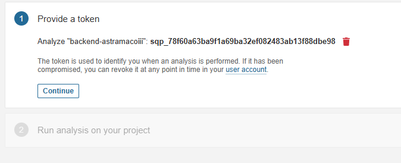
Alta del token de análisis en SonarQube parabackend-astramacoiii.
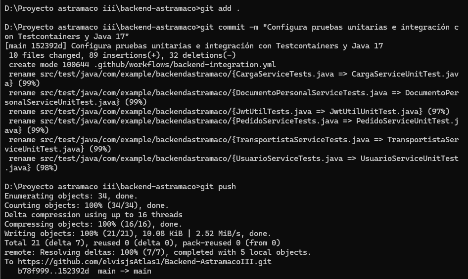
git push tras estandarizar el naming de las pruebas a *UnitTest (Testcontainers + Java 17).
CI/CD — Frontend (GitHub Actions)¶
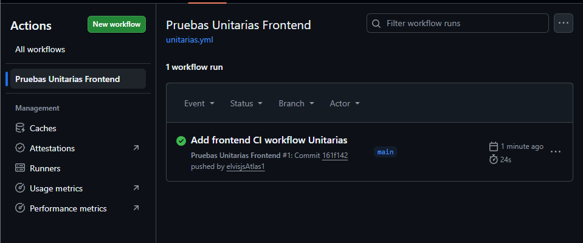
Workflowunitarias.yml del frontend Angular, corrida exitosa (24s) en la rama main.
SonarQube y cobertura de código¶
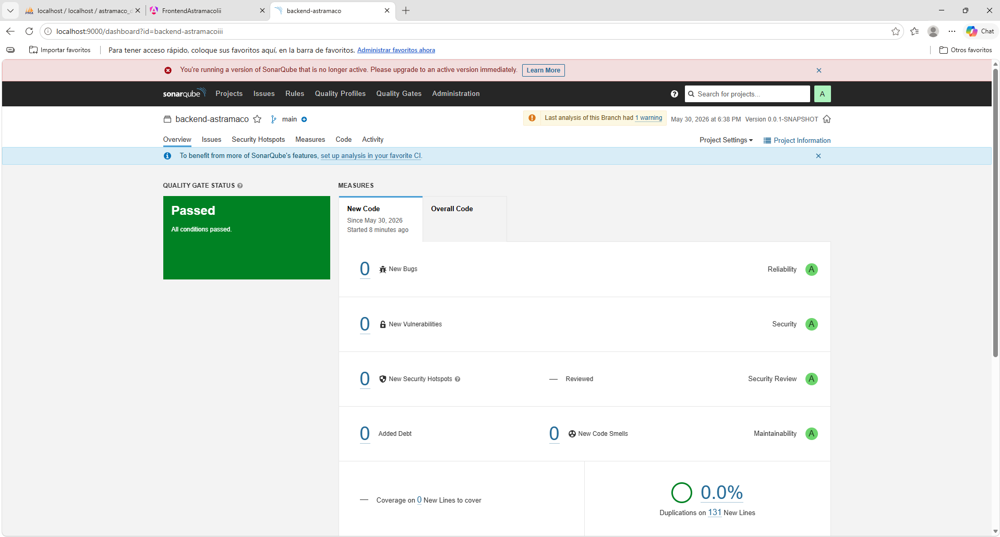
SonarQube local (backend-astramaco, rama main): Quality Gate Passed, 0 bugs, 0 vulnerabilidades, 43 unit tests, calificación A en confiabilidad/seguridad/mantenibilidad.
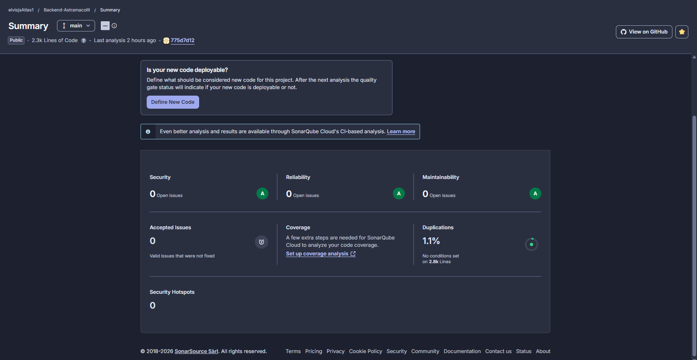
Resumen del proyecto en SonarCloud (Backend-AstramacoIII): 2.3k líneas de código, 0 issues abiertos, 1.1% de duplicación.
Reporte CNES generado a partir del análisis SonarQube (issues por severidad/tipo, evolución de deuda técnica):
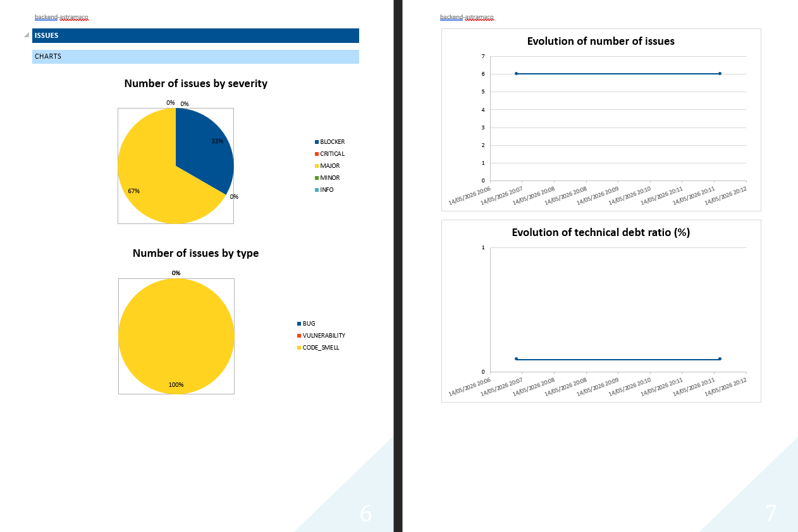
Pruebas de seguridad¶
Batería de pruebas documentada en 7 fases: (1) descubrimiento con Nmap, (2) revisión de la API REST (Swagger /swagger-ui/index.html), (3) SQL Injection, (4) validación de entradas / XSS, (5) fuerza bruta sobre /api/auth/login, (6) cabeceras HTTP, (7) OWASP ZAP baseline scan.
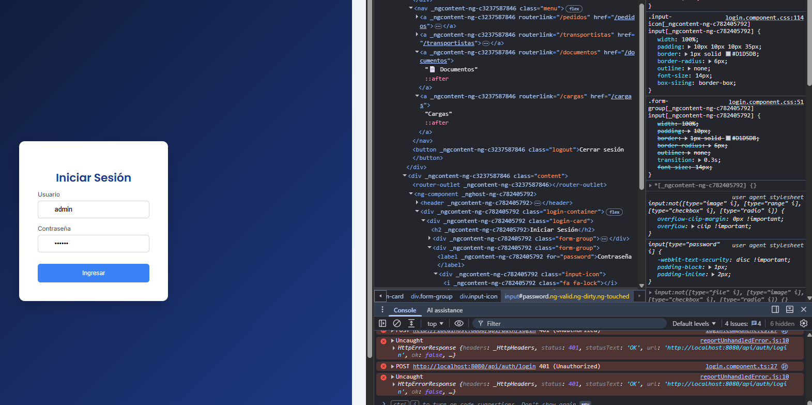
Prueba de fuerza bruta / validación de credenciales sobre/api/auth/login: el backend responde consistentemente 401 Unauthorized. Hallazgo: falta un mecanismo de Rate Limiting.
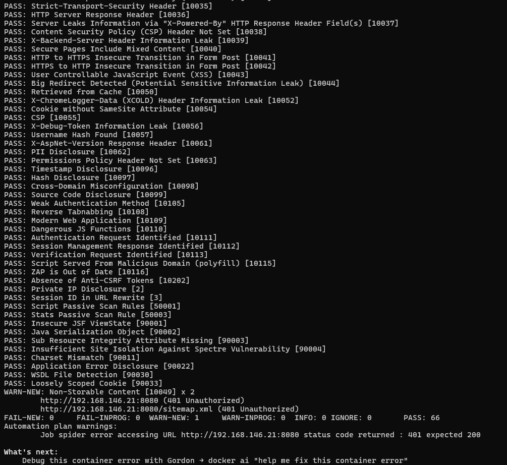
Salida dezap-baseline.py contra el backend: 66 controles PASS, 0 FAIL, 1 advertencia (contenido no almacenable). Cabeceras X-Frame-Options: DENY y X-Content-Type-Options: nosniff confirmadas.
Swagger / OpenAPI¶
El backend expone documentación Swagger en http://localhost:8080/swagger-ui/index.html (paquete security/swagger/OpenApiConfig.java, confirmado también como objetivo de la Fase 2 de pruebas de seguridad, ver arriba).
Sin captura dedicada de Swagger UI
Entre los documentos entregados no se incluyó una captura de pantalla específica de la interfaz Swagger UI (solo se referencia su URL como endpoint auditado). Si el equipo cuenta con una, debe añadirse a docs/assets/img/config-herramientas/ y enlazarse aquí.
Manual de usuario / pantallas del sistema¶
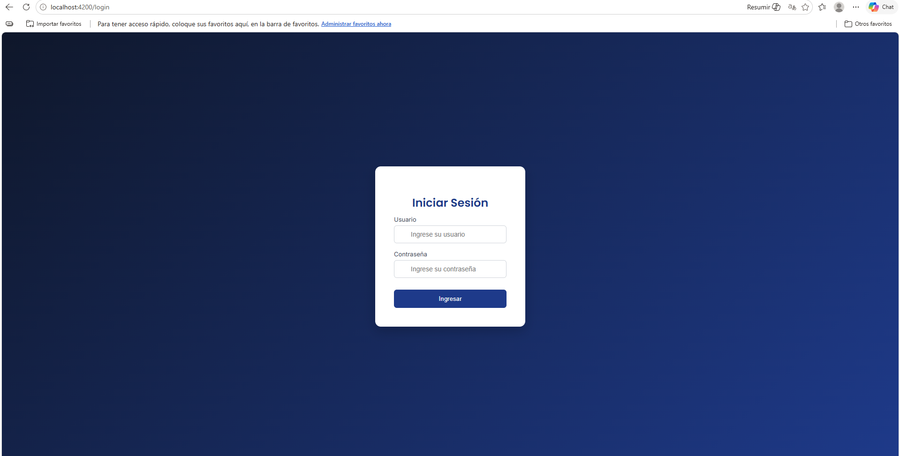
Pantalla "Iniciar Sesión" del frontend Techmovil (Angular,localhost:4200) documentada en el Manual de Usuario.
Pruebas E2E manuales¶
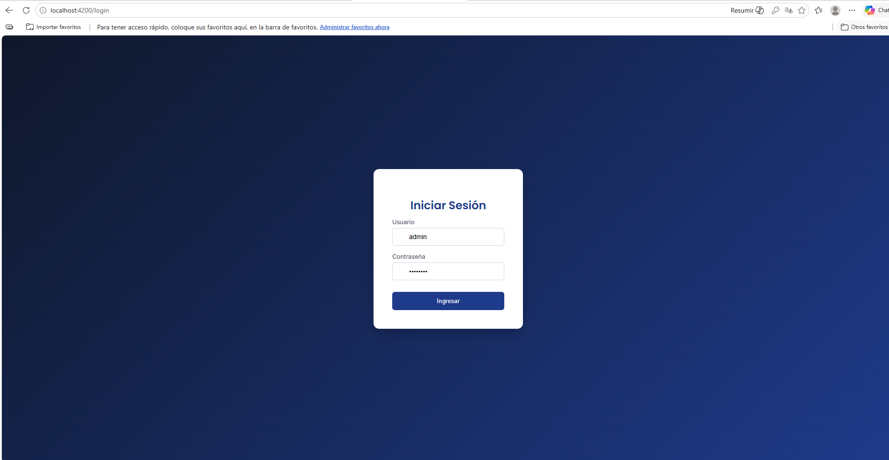
Mismo flujo de login usado como caso base en el informe de Pruebas de Sistema End-to-End (manuales).Pruebas unitarias — hallazgo¶
No hay capturas de evidencia para pruebas unitarias
El documento "Pruebas Unitarias" entregado por el equipo de desarrollo describe correctamente la ficha técnica, el repositorio y el árbol de directorios (reproducido arriba), pero no incluye una sola captura de pantalla de una ejecución de pruebas, un reporte de cobertura por clase o una salida de consola — solo trae la carátula institucional. Lo mismo ocurre con el documento "Pruebas Integrales".
Esto es consistente con — y confirma de forma independiente — el hallazgo propio de la auditoría: PT-005 "Cumple Parcialmente" en los Papeles de Trabajo y la no conformidad menor del Informe Final ("limitada documentación de pruebas unitarias automatizadas"). La evidencia indirecta de que las pruebas sí se ejecutan existe (ver la corrida de GitHub Actions y el conteo de "43 Unit Tests" en el dashboard de SonarQube más arriba), pero el entregable formal de pruebas unitarias carece de evidencia visual propia.
Recomendación: adjuntar al documento "Pruebas Unitarias" al menos: (1) una captura de la ejecución mvnw test en consola, (2) el reporte JaCoCo de cobertura por clase, y (3) el resumen de resultados de GitHub Actions para el job de pruebas unitarias.